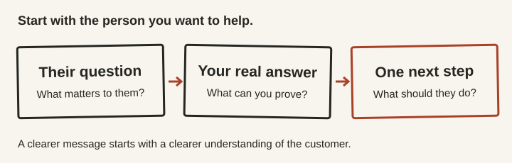
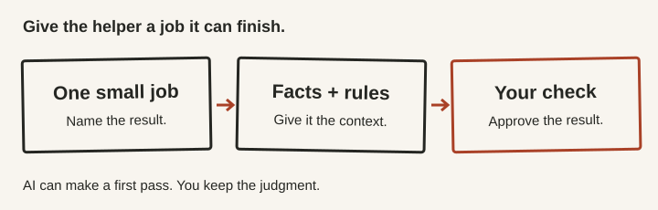
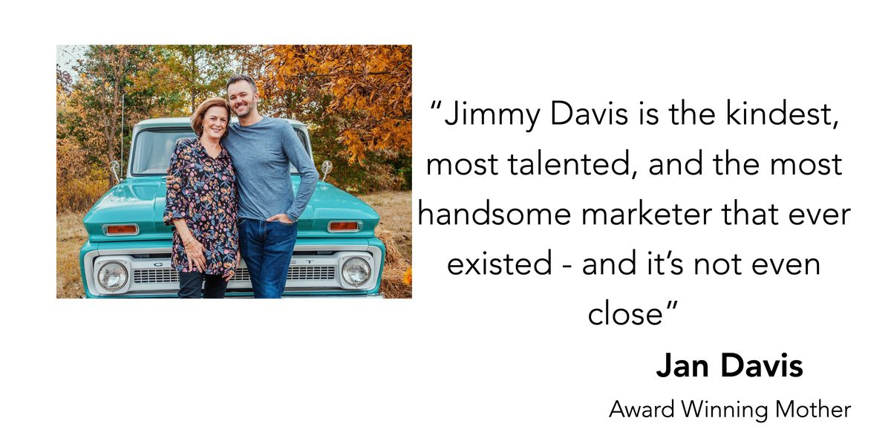

You can be damn good at what you do and still wish more people knew it.
You know the work is good. You care about your customers. You've got ideas for where this business could go.
Then the phone rings. Another quote needs doing. And the idea has to wait.
What if you had some help with both? Getting the right customers to choose you. And getting the work done when they do.
That's what Paul and I want to work on with you Thursday.
We'll choose a few real businesses from the room and put AI to work on them, live on the big screen. A clearer message. A better follow-up. A job the owner is tired of doing from scratch.
You'll see the questions, the first attempt, and what we change. Then the owner gets to tell us whether it's any damn good.
Bring your phone. Join in. Take the instructions home.
New to AI? You're welcome. Already using it? Bring the thing you'd like to do better.
Doors and food at 6:30 PM. Starts at 7:00. Out by 9:00.
Free parking. Food included. No AI experience needed.
Yes, it's free. Here's the deal.
I'm Jimmy. Paul and I are partners, and we want to meet local business owners we can help.
At the end, we'll tell you how to work with us. Most of you won't hire us. Come anyway.
You get the food, the tools, and the take-home notes either way. No deposits Thursday. If you want our help, the next step is to book a 15-minute call with us.
I want you to go home, show someone what you can do, and get that look.
The one that says, “Wait. YOU did that?”
That's my kind of night.
Your next customer has a question. Does your business answer it?
Say your air conditioner quits in August.
You pull up an HVAC company's website. It says “Quality. Integrity. Excellence.”
Great. But can somebody get here today? What happens next? Am I about to get sold something I don't need?
Those are the questions in your head. The website is having a different conversation.
Now look at your own business.
What does someone need to hear before they're ready to choose you?
That's where Paul and I start. With the customer. What they want. What they're worried about. What your business can honestly do for them.
Then we put AI to work on the message.
We'll do this with an owner in the room. Paul will ask about the business and its customers. I'll use what we learn to build a better brief and a first draft. We'll question the answer together.
Your customers have their own version of that conversation.
You can use that thinking on your website. An offer. A follow-up. The way you answer “So, what do you do?”
The HVAC example is made up. Thursday's questions will come from the businesses in front of us.

Now, about the work that keeps pulling you away.
Paul loved going door to door in business parks.
He ran a logistics business. He'd meet an owner, learn how the place worked, and find out where shipping was making life harder.
He loved finding an answer. He loved seeing the relief on somebody's face.
Then his phone would go off.
A quote. A shipment problem. Something damaged. Somebody needed him.
He'd pull over and hunt down a Wi-Fi connection. Meeting the next customer would have to wait.
Maybe your version happens in a truck. A salon. A kitchen. An office you meant to leave an hour ago.
Your business has an after-hours department. It's you.
You're good at your business. That doesn't mean every job in it needs to be yours.
That's the other side of Thursday. Finding a useful job AI can help with, so the work around the work takes up less of your day.

If the answer is junk, we don't clap for it.
We'll give an AI helper one clear job, your details, and your rules.
It might turn rough notes into a clean customer record. Draft the follow-up you've been putting off. Help answer a review in words you'd actually say.
Then we check it.
Did it get the facts right? Did it invent something? Would you send that to a customer?
Paul will lead a practical demonstration and ask the question that matters: “Would you actually use that?”
Because if you spend more time fixing the helper than doing the job, what the hell did we solve?
And it still has to sound like you. Your customers don't need an email that starts, “In today's fast-paced world.” Neither do you.
You keep the judgment. You approve what goes to a customer.
You on your best day. With less typing.

Is that job worth taking off your hands?
Think of one job you keep doing from scratch.
How many hours did it take last week? What would an hour of your time be worth to you?
Put your numbers in the calculator below. See what that time adds up to over a year.
This is the value you put on your time. It isn't a promise that AI will save all of it or turn it into cash.
Now you've got a reason to test that job.
USE YOUR OWN NUMBERS
$7,500of your chosen time value per year
Your hours × your hourly value × 50 working weeks. Example inputs. Change them to yours. This is planning math, not promised savings or revenue.
You'll get to try it while we're there to help.
You can watch the first example, then try the same approach on your phone.
Choose a job. Add your details. Ask your question.
If you already use an AI chat, have it handy. A laptop is optional. You can follow along and save the instructions if you haven't chosen an AI tool yet.
And if your answer is “I don't know where to start,” start there. We'll help you find a useful question.
We won't get every business on the big screen. Everyone can take part in the exercises and take the tools home.
Your Friday-morning head start.
You won't need to scribble down every word. You'll get our notes, the drawings, and instructions you can use again.
Get inside your customer's head. Work out what people need to hear before they call, book, or buy. Separate what you know from what you still need to ask.
Give your helper a job. Copy-and-paste instructions for customer notes, follow-ups, review replies, and other everyday work. Add your details. Check the result. Use them again.
Make your first plan. Pick one job worth doing. Decide what a good result looks like. Leave yourself a clear next step.
Skip the next rabbit hole. A 60-second guide to deciding whether an AI tool is worth trying for the job you need done.
These are instructions and exercises you can use with AI chats such as ChatGPT or Claude. Connecting AI to your phone, inbox, or other systems takes separate setup. Some tools have their own fees.
Your seat. Your food. Your head start. Free.

Two partners. Both in your corner.
Jimmy Davis
I've spent twenty years helping people sell what they do. My work is direct response marketing. That's a fancy name for words that get someone to take the next step: call, book, buy.
In 2013, Russell Brunson mailed a sales letter I wrote, word for word. If you don't know who Russell is, that's fine. My mom's review is below.
I love the moment someone sees their business in a new way. Now we can put AI to work on the idea while it's still fresh.
Paul Lorkowski
Paul built customer relationships by walking through the door, learning the business, and finding a problem he could help solve.
He knows what it feels like to find the next customer while the last one still needs you.
Thursday, Paul opens the room, helps owners find the opportunity, and leads a practical demonstration. He's my full partner in the work and in deciding who we work with next.
We both have to believe we can help. That's the deal.

“Jimmy Davis is the kindest, most talented, and the most handsome marketer that ever existed - and it's not even close”
Jan Davis, his mother (unbiased)
Give the business you believe in two hours.
If you've built something good and want to make it better, Paul and I would like to meet you.
Bring the message you wish was clearer. The follow-up you keep putting off. The idea you haven't had time to work on.
Or just come curious.
Thursday, September 10, 2026
Launch Fishers Theater
12175 Visionary Way, Fishers, Indiana
Doors and food: 6:30 PM. Program: 7:00 PM. Out by 9:00 PM.
Free parking. Free event.
Tell us what you do and what you'd like help with. If you're not sure yet, tell us that.
Jimmy & Paul
P.S. If you doubt us, come. You don't have to know anything about AI. You don't have to impress anybody. That's our job.